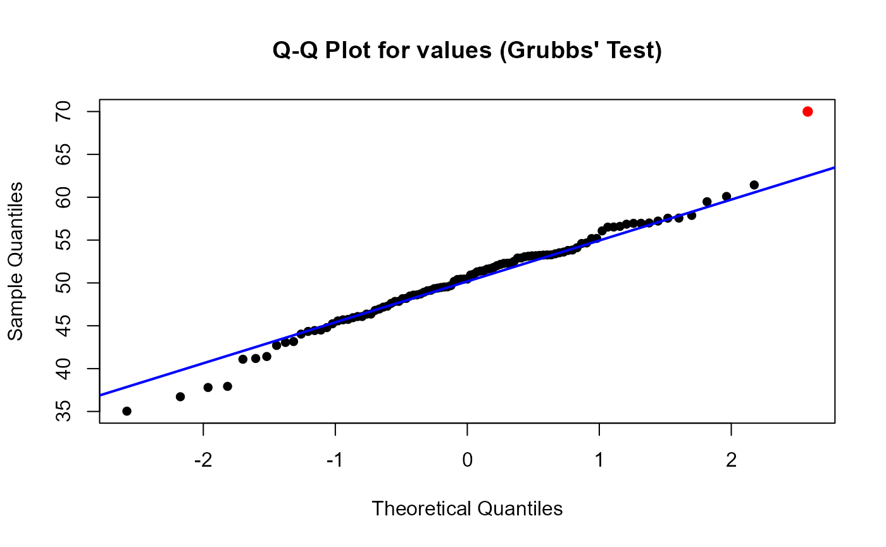
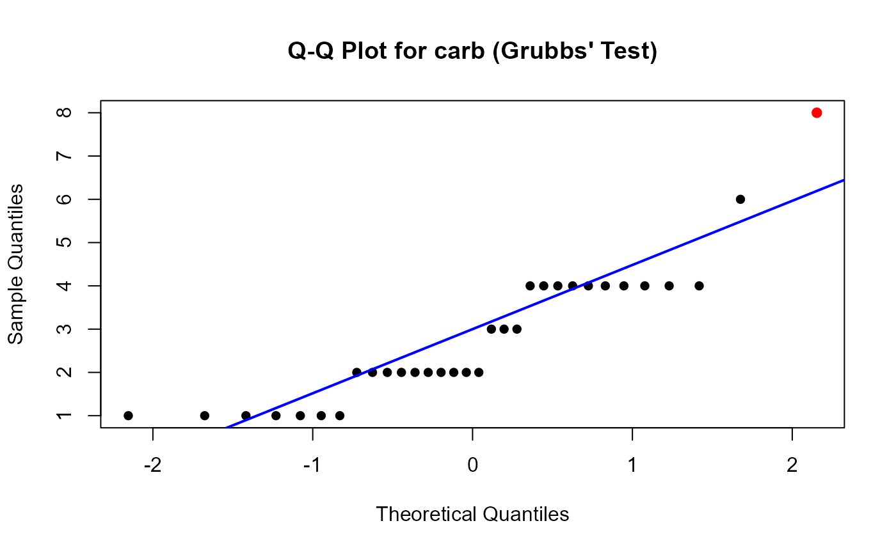

What are univariate outliers? How do you detect them?
Univariate outliers are data points consisting of an extreme value
for one variable. These values lie far from the dataset’s central
tendency. Here is a graphical example of a univariate outlier from the
Salaries dataset in the carData package. The
outlier is shown in red.
#> Warning: package 'ggplot2' was built under R version 4.4.2
While there are many different methods that can be used to detect univariate outliers, this package detects univariate outliers using three methods: creating a boxplot, using the Grubbs’ test, and with the median absolute deviation test.
The function detects outliers in the specified column(s) and provides the following output: (1) The value of the detected outliers and the corresponding row numbers. (2) A graphical visualization showing the distribution of the data with the outliers highlighted according to the selected method.
Boxplot Method
The boxplot method for univariate outlier detection identifies extreme data points by examining the distribution of values using a boxplot. In this method, the “whiskers” of the boxplot represent the range of typical values within a dataset. In this function, outliers are defined as values that fall outside the whiskers, which are calculated as Q1−1.58×IQR for the lower bound and Q3+1.58×IQR for the upper bound, where Q1 and Q3 are the first and third quartiles, respectively, and IQR is the interquartile range (the difference between Q3 and Q1) to allow for a broader range and a different threshold for detecting extreme values. 1.58 is the length of the whiskers as multiple of IQR.
This method helps quickly identify potential outliers, which are plotted individually and can indicate unusual or problematic data points that may warrant further investigation.
Here is an example of the boxplot method for univariate outliers in action using the mtcarsOutliers dataset included with this package. We will first assign the output of our univOutliers function to a variable named “object”.
object <- univOutliers(mtcarsOutliers, x="disp", method = "boxplot")The plotfunction is used to visualize the outliers detected by the boxplot method. A graphical representation will be generated with the outliers highlighted in red.
plot(object)
The print function is used to obtain a list of all of the outliers detected by the boxplot method along with their corresponding row numbers.
print(object)
#> Loading required package: cli
#> Loading required package: knitr
#> Warning: package 'knitr' was built under R version 4.4.2
#>
#> ── Method Chosen: boxplot ──────────────────────────────────────────────────────
#> Variable: disp
#>
#> Outliers Detected for:
#>
#>
#> Row Number Outlier Value
#> ------------ ---------------
#> 11 -459.2495
#> 19 783.2571MAD
The MAD (Median Absolute Deviation) method for univariate outlier detection identifies outliers based on a robust measure of variability, the median absolute deviation. In the visualization for this method, the red line represents the median of the values in the target vector. The upper CI limit is the median + 3MAD and the lower CI limit is median - 3MAD. The points outside of the confidence interval are the outliers detected by the MAD method.
Here is an example of the MAD method for univariate outliers in action using the mtcarsOutliers dataset included with this package. We will first assign the output of our univOutliers fcn to a variable named “object”.
object <- univOutliers(mtcarsOutliers, x="disp", method = "mad")We will then use the plot function to visualize the outliers detected by the MAD method. Note that the points highlighted in red are the outliers detected by the MAD method.
plot(object)
We will then use the print function to obtain a list of all of the outliers detected by the MAD method along with their corresponding row numbers.
print(object)
#>
#> ── Method Chosen: mad ──────────────────────────────────────────────────────────
#> Variable: disp
#>
#> Outliers Detected for:
#>
#>
#> Row Number Outlier Value
#> ------------ ---------------
#> 11 -459.2495
#> 19 783.2571Grubb’s Test
The Grubbs’ Test is a simple technique that iteratively identifies outliers by testing the hypothesis that the largest or smallest value is an outlier. The Grubbs’ test requires the data to be normally distributed because it relies on mean and standard deviation.
Here is an example of the Grubbs method for univariate outliers using a randomly generated normally distributed dataset, with a clear outlier. We will first assign the output of our univOutliers fcn to a variable named “object_normal_outlier”. We will then plot the object using a qq plot and print the results.
# TO TEST NORMAL DIST W OUTLIER FOR GRUBBS
object_normal_outlier <- univOutliers(data = grubbsOutlier, x = "values", method = "grubbs")
plot(object_normal_outlier) # Plotting the object with the outlier
print(object_normal_outlier) # Printing the outliers and methods
#>
#> ── Method Chosen: grubbs ───────────────────────────────────────────────────────
#> Variable: values
#>
#> Outliers Detected for:
#>
#>
#> Row Number Outlier Value
#> ------------ ---------------
#> 101 70Here is an example of the Grubbs method for univariate outliers using the mtcarsOutliers dataset included with this package. We will first assign the output of our univOutliers fcn to a variable named “object3”. We will then plot the object using a qq plot and print the results.
object3 <- univOutliers(data = mtcars, x = "carb", method = "grubbs")
#> Warning in grubbs_test(column_data): Data is not normally distributed. Grubbs'
#> test may not be appropriate.
plot(object3) # Plotting the object with 'mtcars' dataset
print(object3) # Printing the outliers and methods
#>
#> ── Method Chosen: grubbs ───────────────────────────────────────────────────────
#> Variable: carb
#>
#> Outliers Detected for:
#>
#>
#> Row Number Outlier Value
#> ------------ ---------------
#> 31 8The output of Grubbs’ test will provide the identified outliers and the corresponding row numbers. This method uses a Shapiro-Wilk test (shapiro.test) for normality. If the p-value of the normality test is less than 0.05, it issues a warning about normality because a high p-value could affect the accuracy of the Grubbs’ Test.